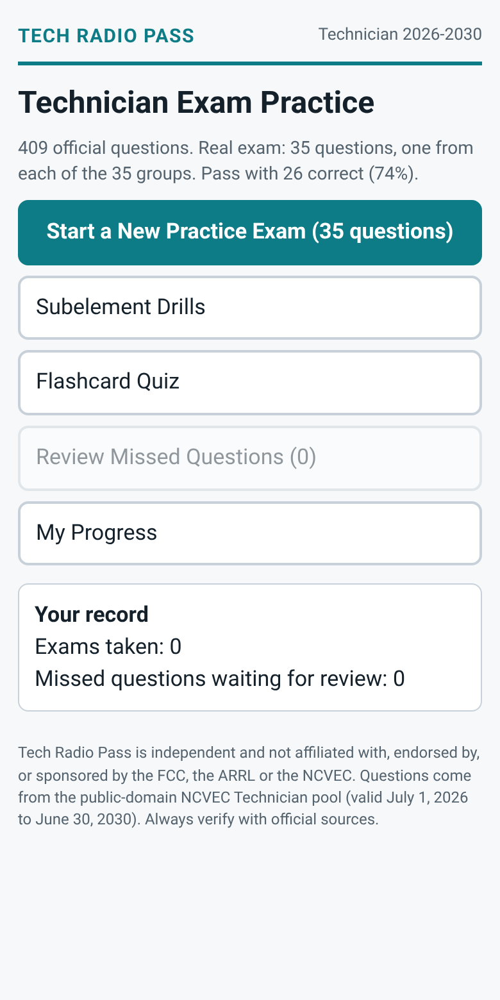
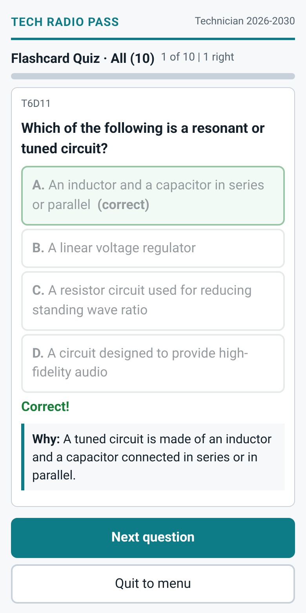
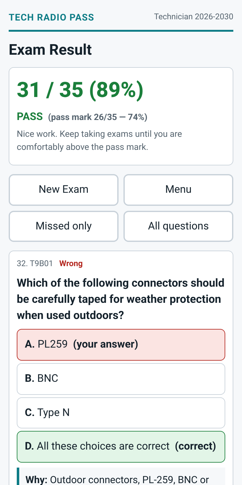

A complete study kit for the US amateur radio Technician (FCC Element 2) exam, built on the current NCVEC 2026-2030 question pool (409 questions, valid for exams July 1, 2026 through June 30, 2030, including the February 19, 2026 errata).
One-time purchase. Your download link and quiz-app license key arrive by email, usually within about 15 minutes. No account, no subscription.
The Technician exam is 35 multiple-choice questions, one drawn from each of the 35 question groups in the pool. You need 26 correct (about 74%) to pass. Every practice exam in this kit is built the same way, one question per group, so you practice the test as it is actually given.
| Study Guide (PDF, 81 pages) | All 409 pool questions by subelement (T1 to T0) and group, the correct answer highlighted, and a short plain-English explanation for every question. Includes the three pool schematic figures. |
|---|---|
| Cheat Sheets (PDF, 5 pages) | Technician band privileges (checked against FCC Part 97), Ohm's law and power formulas, wavelength, decibels, metric prefixes, Q-codes, phonetic alphabet, key numbers and schematic symbols. |
| 12 Practice Exams (PDF) | 35 questions each, one per group like the real test, with answer sheets, answer keys and explanations. |
| 45 Quick Quizzes (PDF) | 10 questions each, covering every subelement, with answer keys and explanations. |
| Offline Quiz App (one HTML file) | Runs in any modern browser on a phone, tablet or computer. Activate it once with your license key (needs internet once; 1 key = 1 device), then it works offline with no account. A free 10-question sample works without a key. Unlimited random 35-question practice exams scored PASS/FAIL at 26/35, subelement and group drills, a Flashcard Quiz where you answer A/B/C/D and get a PASS/FAIL percentage, review of missed questions, and a progress page. Progress stays on your device; the only network use is the one-time activation (key and a random device id, nothing else). |
| Anki Deck (.apkg) | All 409 questions as flashcards, tagged by subelement and group, figures included. |
| README | Setup steps for each part and a suggested 2 to 4 week study plan. |
Download: one zip file, about 1.1 MB (4 PDFs, 1 HTML app, 1 Anki deck, 1 README). Your link works 3 times, so save the zip. Files are stamped with your order number.



Tech Radio Pass is a digital download. Please review the contents list and screenshots above before you buy. All sales are final, no refunds except where required by law. If your download link or key doesn't arrive, a file won't open, or you need your key moved to a new device, email service@getpathprobe.com and we will help. See our Refund Policy.
Tech Radio Pass is independent and is not affiliated with, endorsed by, or sponsored by the FCC, the ARRL or the NCVEC.
Our order process is conducted by our online reseller Paddle.com. Paddle.com is the Merchant of Record for all our orders. Paddle provides all customer service inquiries and handles returns. See Paddle's Checkout Buyer Terms.